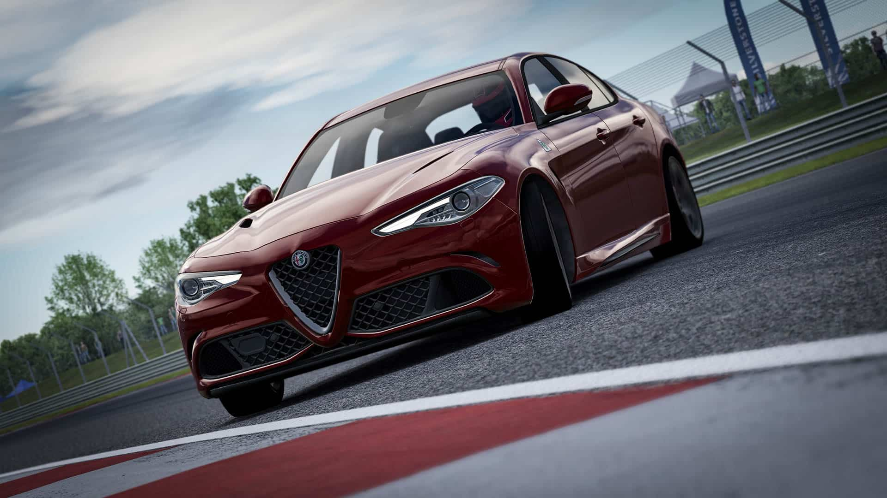
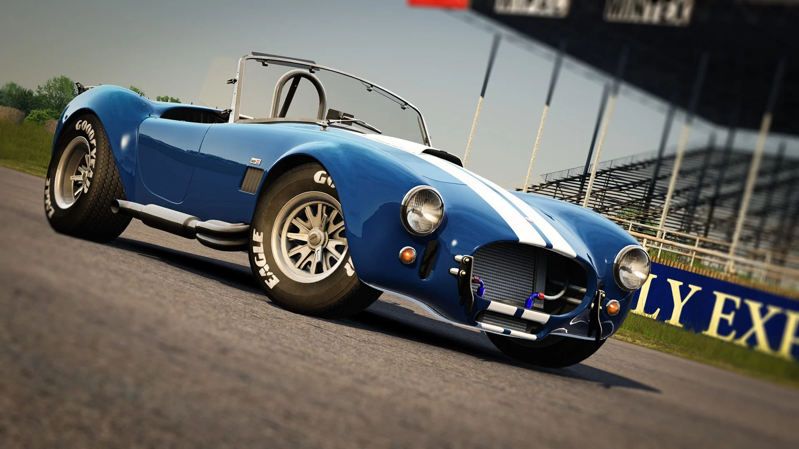

Assetto Corsa
Assetto Corsa je simulacijska videoigra trkaćih automobila koju je razvila talijanska tvrtka za razvoj videoigara Kunos Simulazioni.
Dizajnirana je s naglaskom na realistično iskustvo utrkivanja, pružajući opsežne mogućnosti prilagodbe i modiranja.

Alfa-Romeo-Quadrofoglio

Shelby cobra